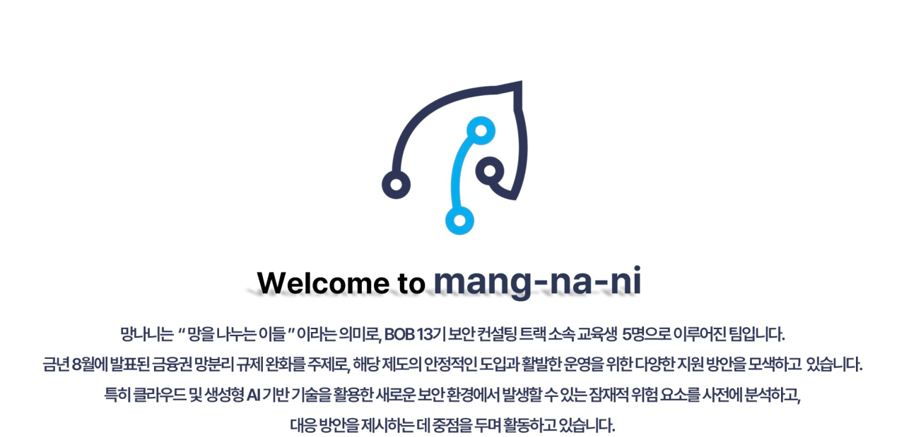

 워게임 배경설명 워게임 배경설명 금융권의 망분리 규제가 완화됨에 따라 생성형 AI 활용이 허용되고,클라우드 기반 응용 프로그램(SaaS) 사용이 대폭 확대되었습니다. 이러한 환경 변화에 발맞춰 망나니 기업은 내부망의 업무 환경을 전면 개편하여 클라우드 중심의 새로운 인프라를 도입하였습니다. 우리는 외부 침입 경로를 통해 망나니의 내부망에 성공적으로 접근하였으며, 최신 클라우드 서비스를 탐지하였습니다.이 서비스에서 다양한 취약점들을 발견하고 공략해보세요. 확인 워게임 풀러가기